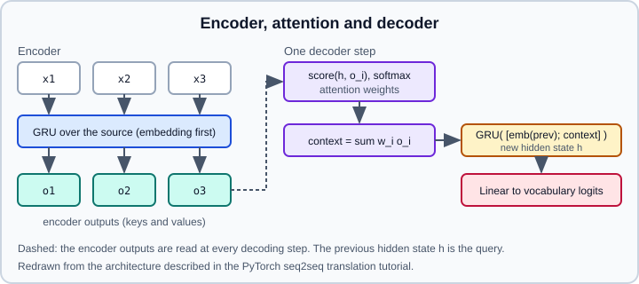

Worked Example: Character RNN & seq2seq
|
This content was generated with the assistance of AI and should be verified against the official documentation before being relied on in production. |
Recurrent networks read a sequence one element at a time and carry a hidden state that summarizes what they have seen. This page walks through two official PyTorch tutorials from the "NLP From Scratch" series and shows batched, GPU-friendly versions of their code: a character-level classifier that predicts the language of origin of a surname, and a sequence-to-sequence (seq2seq) model with attention that maps a sentence in one language to another. The recurrent-network theory, including vanishing gradients, LSTM and GRU cells, bidirectional and stacked layers, is in Recurrent Networks & Sequences; the PyTorch layer reference is RNN, LSTM & GRU. For the model that replaced these architectures in practice, continue with Worked Example: Transformer Building Blocks.
Examples target Python 3.13 and PyTorch 2.15. The page follows two official tutorials, last updated in November 2025 (character-level classification) and October 2024 (translation). The code was run on Python 3.13 with PyTorch 2.15 on 2026-10-31 (the classifier on a small synthetic stand-in for the names data, the seq2seq model on its toy task, where it learned to reverse the digits); no accuracy on the real names data is quoted. The same ideas appear in book-length treatments such as Rao and McMahan’s NLP with PyTorch; here they are used only as background, and all code is written for this page.
Part 1: classifying names with a character-level RNN
What the official tutorial does
The tutorial "NLP From Scratch: Classifying Names with a Character-Level RNN" downloads https://download.pytorch.org/tutorial/data.zip and extracts it so that data/names holds 18 text files, one per language, named [Language].txt, with one surname per line (20,074 names in total). A NamesDataset(Dataset) globs the files, uses the file name as the label, one-hot encodes each name over the 58-character alphabet and splits 85/15 into 17,063 training and 3,011 validation examples with random_split and a seeded generator (seed 2024). The model wraps nn.RNN(58, 128), a Linear layer from the final hidden state to 18 classes and LogSoftmax, and trains with nn.NLLLoss.
Because names have different lengths, the tutorial does not use a DataLoader. It builds minibatches of 64 by shuffling indices with np.array_split, loops over the examples of a batch one at a time, sums the per-example losses, backpropagates, clips the gradient norm to 3 and takes an SGD step (learning rate 0.15, 27 epochs, about 305 seconds on the machine used for the page). Evaluation switches to eval mode, runs under torch.no_grad() and builds a row-normalized confusion matrix. The tutorial notes that nn.RNN is faster than a hand-written loop because it uses optimized (cuDNN) kernels.
A batched version with padding and packing
Looping over examples one at a time wastes the accelerator. The standard remedy is to pad the batch to a common length and tell the RNN the true lengths, using pad_sequence and pack_padded_sequence. The packed input makes the recurrent layer skip the padding, so the final hidden state really is the state after the last character of each name.
import glob
import os
import string
import unicodedata
import torch
import torch.nn as nn
import torch.nn.functional as F
from torch.nn.utils.rnn import pack_padded_sequence, pad_sequence
from torch.utils.data import DataLoader, Dataset, random_split
ALLOWED = string.ascii_letters + " .,;'"
N_LETTERS = len(ALLOWED) # 57 here; the tutorial counts 58 because it adds an extra symbol
def to_ascii(s: str) -> str:
"""Strip accents (NFD, drop combining marks) and keep only ALLOWED characters."""
s = unicodedata.normalize("NFD", s)
return "".join(c for c in s if unicodedata.category(c) != "Mn" and c in ALLOWED)
class NamesDataset(Dataset):
def __init__(self, folder="data/names"):
files = sorted(glob.glob(os.path.join(folder, "*.txt")))
self.languages = [os.path.splitext(os.path.basename(f))[0] for f in files]
self.items = []
for label, path in enumerate(files):
with open(path, encoding="utf-8") as fh:
for line in fh:
name = to_ascii(line.strip())
if name:
self.items.append((name, label))
def __len__(self):
return len(self.items)
def __getitem__(self, i):
name, label = self.items[i]
idx = torch.tensor([ALLOWED.index(c) for c in name], dtype=torch.long)
return idx, label
def collate(batch):
seqs, labels = zip(*batch)
lengths = torch.tensor([len(s) for s in seqs])
padded = pad_sequence(seqs, batch_first=True) # (N, L_max), padded with 0
return padded, lengths, torch.tensor(labels)
class CharGRU(nn.Module):
def __init__(self, hidden=128, n_classes=18):
super().__init__()
self.rnn = nn.GRU(N_LETTERS, hidden, batch_first=True)
self.out = nn.Linear(hidden, n_classes)
def forward(self, x, lengths):
x = F.one_hot(x, N_LETTERS).float() # (N, L, N_LETTERS)
packed = pack_padded_sequence(x, lengths.cpu(), batch_first=True, enforce_sorted=False)
_, h = self.rnn(packed) # h: (num_layers, N, hidden)
return self.out(h[-1]) # logits, shape (N, n_classes)
def run(epochs=20, lr=2e-3, device=None):
device = device or (torch.accelerator.current_accelerator() if torch.accelerator.is_available() else "cpu")
ds = NamesDataset()
g = torch.Generator().manual_seed(2024)
train_ds, val_ds = random_split(ds, [0.85, 0.15], generator=g)
train = DataLoader(train_ds, batch_size=64, shuffle=True, collate_fn=collate)
val = DataLoader(val_ds, batch_size=256, collate_fn=collate)
model = CharGRU(n_classes=len(ds.languages)).to(device)
opt = torch.optim.Adam(model.parameters(), lr=lr)
loss_fn = nn.CrossEntropyLoss()
for epoch in range(1, epochs + 1):
model.train()
for x, lengths, y in train:
x, y = x.to(device), y.to(device)
loss = loss_fn(model(x, lengths), y)
opt.zero_grad(set_to_none=True)
loss.backward()
nn.utils.clip_grad_norm_(model.parameters(), 3.0)
opt.step()
model.eval()
correct = total = 0
with torch.inference_mode():
for x, lengths, y in val:
pred = model(x.to(device), lengths).argmax(1).cpu()
correct += (pred == y).sum().item()
total += y.numel()
print(f"epoch {epoch:2d} val accuracy {correct / total:.3f}")
return model, ds
def predict(model, ds, name, k=3, device="cpu"):
model.eval().to(device)
idx = torch.tensor([[ALLOWED.index(c) for c in to_ascii(name)]], device=device)
with torch.inference_mode():
probs = model(idx, torch.tensor([idx.size(1)])).softmax(1)[0]
top = probs.topk(k)
return [(ds.languages[i], round(p, 3)) for p, i in zip(top.values.tolist(), top.indices.tolist())]Source: adapted from https://docs.pytorch.org/tutorials/intermediate/char_rnn_classification_tutorial.html (data set, split and clipping), with the layer behaviour from https://docs.pytorch.org/docs/stable/generated/torch.nn.GRU.html and https://docs.pytorch.org/docs/stable/generated/torch.nn.utils.rnn.pack_padded_sequence.html
What to notice:
-
Shapes. With
batch_first=Truethe input is(N, L, features). Without it (the default)nn.RNN,nn.GRUandnn.LSTMexpect(L, N, features), a frequent source of silent bugs. The returnedhis(num_layers * num_directions, N, hidden);h[-1]is the last layer’s final state for a unidirectional model. -
Packing.
lengthsmust be a CPUint64tensor;enforce_sorted=Falselets you pass an unsorted batch (PyTorch sorts it internally). Without packing, the final state would come after the padding characters. -
Loss. The tutorial uses
LogSoftmaxwithnn.NLLLoss.nn.CrossEntropyLosson raw logits is mathematically the same and numerically safer, and is what the script uses; see Loss Functions. Applysoftmaxonly for reporting probabilities, aspredictdoes. -
Gradient clipping. The tutorial clips the gradient norm to 3 because recurrent networks can have exploding gradients; keep it for any RNN you train.
-
GRU instead of the tutorial’s plain
nn.RNN. A GRU (or LSTM) is more robust on longer sequences; for 4-15 character names the difference is small. Swappingnn.GRUfornn.RNNornn.LSTMneeds a one-line change; an LSTM also returns a cell state, so unpack_, (h, c) = self.rnn(packed). -
Where
nn.Embeddingfits. One-hot vectors over 57 characters are fine; for a larger vocabulary replaceF.one_hotand the first layer withnn.Embedding(vocab, dim).
The tutorial’s evaluation builds a confusion matrix; the function in Worked Example: CNN Image Classifier works unchanged for this model if you adapt the forward call.
Part 2: translation with seq2seq and attention
What the official tutorial does
"NLP From Scratch: Translation with a Sequence to Sequence Network and Attention" (the third tutorial in the series) translates English to French from sentence pairs distributed at https://download.pytorch.org/tutorial/data.zip as data/eng-fra.txt (the pairs originate from manythings.org/anki). It builds three pieces:
-
EncoderRNN: an embedding, dropout and a GRU withbatch_first=True; it returns the per-token outputs and the final hidden state. -
BahdanauAttention: additive attention, which scores each encoder output against the decoder state with a small feed-forward network, softmaxes the scores and returns the weighted sum of encoder outputs (the context) and the weights. -
AttnDecoderRNN: an embedding, the attention module, a GRU whose input is the embedded previous token concatenated with the context (so twice the hidden size), a linear output layer andlog_softmax. It loops up toMAX_LENGTHsteps starting from the start-of-sequence token.
Teacher forcing means feeding the true previous target token to the decoder instead of its own prediction. In the tutorial’s code the decoder uses the target tokens when a target is passed, and train_epoch always passes it, so training is fully teacher-forced; the surrounding prose mentions a teacher_forcing_ratio, but the shown code does not use one. At inference time there is no target, so the decoder feeds back its own top prediction.

A runnable seq2seq model on a toy task
To make the code runnable without a download, the script below trains the same architecture on a toy task, reversing a string of digits, and uses a real attention mask for padding. Replacing the toy data with the tokenized eng-fra.txt pairs from the tutorial changes only the data code. All class and function names here are written for this page and are not the tutorial’s code.
import random
import torch
import torch.nn as nn
import torch.nn.functional as F
from torch.nn.utils.rnn import pack_padded_sequence, pad_packed_sequence
PAD, SOS, EOS = 0, 1, 2
VOCAB = 13 # 0 PAD, 1 SOS, 2 EOS, 3..12 the digits 0..9
def make_batch(n=64, min_len=3, max_len=8):
src, tgt = [], []
for _ in range(n):
digits = [random.randint(3, 12) for _ in range(random.randint(min_len, max_len))]
src.append(digits + [EOS])
tgt.append(digits[::-1] + [EOS])
def pad(seqs):
L = max(len(s) for s in seqs)
return torch.tensor([s + [PAD] * (L - len(s)) for s in seqs])
return pad(src), pad(tgt)
class Encoder(nn.Module):
def __init__(self, vocab, hidden):
super().__init__()
self.emb = nn.Embedding(vocab, hidden, padding_idx=PAD)
self.gru = nn.GRU(hidden, hidden, batch_first=True)
def forward(self, src):
lengths = (src != PAD).sum(1)
packed = pack_padded_sequence(self.emb(src), lengths.cpu(), batch_first=True, enforce_sorted=False)
out, h = self.gru(packed)
out, _ = pad_packed_sequence(out, batch_first=True, total_length=src.size(1))
return out, h # out: (N, L, H), h: (1, N, H)
class AdditiveAttention(nn.Module):
def __init__(self, hidden):
super().__init__()
self.Wa = nn.Linear(hidden, hidden)
self.Ua = nn.Linear(hidden, hidden)
self.Va = nn.Linear(hidden, 1)
def forward(self, query, keys, mask):
# query: (N, 1, H); keys: (N, L, H); mask: (N, L) True where the token is real
scores = self.Va(torch.tanh(self.Wa(query) + self.Ua(keys))).squeeze(-1) # (N, L)
scores = scores.masked_fill(~mask, float("-inf"))
weights = F.softmax(scores, dim=-1)
context = torch.bmm(weights.unsqueeze(1), keys) # (N, 1, H)
return context, weights
class AttnDecoder(nn.Module):
def __init__(self, vocab, hidden, dropout=0.1):
super().__init__()
self.emb = nn.Embedding(vocab, hidden, padding_idx=PAD)
self.drop = nn.Dropout(dropout)
self.attn = AdditiveAttention(hidden)
self.gru = nn.GRU(2 * hidden, hidden, batch_first=True)
self.out = nn.Linear(hidden, vocab)
def step(self, token, h, enc_out, mask):
emb = self.drop(self.emb(token)) # (N, 1, H)
context, w = self.attn(h.permute(1, 0, 2), enc_out, mask) # query is the previous hidden state
o, h = self.gru(torch.cat([emb, context], dim=-1), h)
return self.out(o), h, w # logits (N, 1, V)
def forward(self, enc_out, h, mask, target=None, max_len=12, teacher_forcing=1.0):
n = enc_out.size(0)
token = torch.full((n, 1), SOS, dtype=torch.long, device=enc_out.device)
steps = target.size(1) if target is not None else max_len
logits = []
for t in range(steps):
step_logits, h, _ = self.step(token, h, enc_out, mask)
logits.append(step_logits)
if target is not None and random.random() < teacher_forcing:
token = target[:, t:t + 1] # feed the true token
else:
token = step_logits.argmax(-1) # feed the model's own guess
return torch.cat(logits, dim=1) # (N, steps, V)
class Seq2Seq(nn.Module):
def __init__(self, vocab=VOCAB, hidden=128):
super().__init__()
self.encoder = Encoder(vocab, hidden)
self.decoder = AttnDecoder(vocab, hidden)
def forward(self, src, target=None, **kw):
enc_out, h = self.encoder(src)
return self.decoder(enc_out, h, src != PAD, target, **kw)
def train(steps=3000, device="cpu"):
model = Seq2Seq().to(device)
opt = torch.optim.Adam(model.parameters(), lr=2e-3)
loss_fn = nn.CrossEntropyLoss(ignore_index=PAD)
for step in range(1, steps + 1):
src, tgt = (t.to(device) for t in make_batch())
logits = model(src, tgt, teacher_forcing=0.9)
loss = loss_fn(logits.reshape(-1, VOCAB), tgt.reshape(-1))
opt.zero_grad(set_to_none=True)
loss.backward()
nn.utils.clip_grad_norm_(model.parameters(), 1.0)
opt.step()
if step % 500 == 0:
print(f"step {step} loss {loss.item():.3f}")
return model
@torch.inference_mode()
def translate(model, digits, device="cpu"):
model.eval()
src = torch.tensor([[d + 3 for d in digits] + [EOS]], device=device)
out = model(src, target=None, max_len=len(digits) + 1).argmax(-1)[0].tolist()
out = out[: out.index(EOS)] if EOS in out else out
return [t - 3 for t in out]
if __name__ == "__main__":
m = train()
print(translate(m, [1, 2, 3, 4, 5])) # a trained model should print the reversed digitsSource: architecture from https://docs.pytorch.org/tutorials/intermediate/seq2seq_translation_tutorial.html; layer behaviour from https://docs.pytorch.org/docs/stable/nn.html#recurrent-layers
Notes on the design:
-
Masking. The mask makes the attention weight of padding positions exactly zero (
-infbefore the softmax). Forgetting it lets the model attend to padding. -
Loss and padding.
ignore_index=PADremoves padded target positions from the loss and the gradient. -
Variable-length batches in the encoder. Packing means the final hidden state is the state at the last real token, and
pad_packed_sequence(..., total_length=...)returns outputs with the original padded length so the attention mask lines up. -
Teacher forcing ratio. With ratio 1.0 training is fast, but the decoder never sees its own mistakes (exposure bias), so inference can drift. Mixing in the model’s own predictions, as
teacher_forcing=0.9does here, is a simple mitigation; scheduled sampling schedules the ratio down during training. -
Greedy decoding.
translatetakes the arg-max at every step. Real translation systems use beam search, which keeps the best k partial hypotheses; it is not shown in the tutorial’s code and is not built intotorch.nn. -
Speed. The Python loop over decoder steps is slow for long sequences. A GRU decoder without attention could be run in one call during teacher forcing, but attention that depends on the previous hidden state forces step-by-step execution; this is one reason transformers, which attend to all positions in parallel, replaced these models.
How to continue
-
Add evaluation: exact-match accuracy for the toy task and BLEU for real translation (use a library such as
sacrebleu). -
Plot the attention weights returned by
AdditiveAttentionas a heat map; for the reversal task they form an anti-diagonal. -
Replace the GRU layers with
nn.LSTMor add bidirectional encoding (bidirectional=Truedoubles the encoder output size, so project it back to the decoder size). -
Move to a transformer encoder-decoder, see Worked Example: Transformer Building Blocks and Attention, SDPA, FlexAttention & Transformers; the concepts are in Attention & Transformers.
-
For real text use subword tokenization and embeddings from a pre-trained model; see Embeddings & Representation Learning and, for the practical library route, Transformers Pipelines.
-
The
torchtextlibrary, which older NLP tutorials import for vocabularies and data pipelines, is archived; build vocabularies yourself or use Hugging Face tokenizers. See Legacy APIs & Migration.